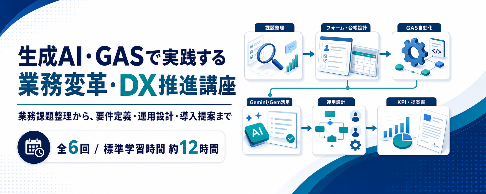

業務課題整理、フォーム・台帳設計、GAS自動化、Gemini/Gem活用、運用設計、KPI付き提案書作成までを6回でつなぐ、eラーニング型の実践講座です。
中小企業でよく発生する、転記、集計、確認、受付管理、申請管理、日報回収、通知、期限管理、会議後のアクション整理などの反復業務を題材に、生成AIとGASを業務フローへ組み込む力を育成します。
単なる操作習得ではなく、業務棚卸し、As-Is/To-Be設計、フォーム化対象の選定、台帳列定義、GASでの抽出・転記・ログ記録、Gem/Geminiによる分類・要約、AI出力レビュー、権限・保存・復旧手順、KPIと導入提案までを扱います。
| 項目 | 内容 |
|---|---|
| 方式 | eラーニング。本研修は、LMS(学習管理システム:Learning Management System)を利用し、各自の受講状況や受講時間を全て記録することで、受講者の学習状況の把握を行い、適切なスキルアップをサポートいたします。 |
| 時間 | 6回、各120分、合計約12時間。2か月以内を目安に、動画を一時停止しながら個人演習と成果物作成を進めます。 |
| 環境 | 検証用Googleアカウント、サンプルCSV、ダミー問い合わせ・日報・会議メモを使用します。実在の顧客情報、社員情報、社内固有資料は使いません。 |
| 成果物 | 業務棚卸しシート、As-Is/To-Be整理、改善候補選定表、フォーム設計表、管理台帳列定義、GASコード読み替えメモ、Gem設計書、AI出力レビュー表、運用設計書、リスクチェックリスト、提案書骨子、KPI表、次アクションメモ。 |
CSVやメール内容を目で確認し、Excelや台帳へ手入力しているため、少量でも毎月の作業時間が積み上がる。
メール、電話、口頭、紙、Excelが混在し、後工程の集計、通知、AI分類、GAS処理に使いにくい。
結合セル、空行、担当者ごとの列追加、自由記述の表記ゆれにより、関数・GAS・AIが正しく読めない。
作った後の権限、ログ、例外処理、手動復旧、後任者への引き継ぎまで設計できていない。
分類や要約は便利でも、事実確認、機密情報、共有範囲、最終判断をどう運用するかが曖昧になる。
試作はできても、KPI、リスク、ロードマップ、導入後の確認方法がなく、社内説明に進めない。
| 回 | テーマ | 主な内容 | 成果物 |
|---|---|---|---|
| 1 | 業務DXの基礎とGoogle Workspace活用設計 | 中小企業のDX動向、手作業の累積コスト、業務分類、As-Is/To-Be、優先順位マトリクス。 | 業務棚卸しシート、As-Is/To-Be整理、改善候補選定表 |
| 2 | 業務データ基盤の設計 | フォーム化対象ケース、設問設計、回答シートと管理台帳、入力規則、条件付き書式、権限・保存設計。 | フォーム設計表、管理台帳列定義、台帳品質チェック、権限・保存設計メモ |
| 3 | GASによる業務プロセス自動化 | GASの位置づけ、JavaScript最小限、SpreadsheetApp、抽出・転記・集計・重複チェック、ログ、カスタムメニュー。 | GASコード読み替えメモ、未対応行抽出・転記・ログ追記のミニプロトタイプ |
| 4 | Gem/Geminiを使った文書作成・分類・要約 | AIの役割分担、情報管理、Gem設計7項目、問い合わせ分類、日報・Meet要約、Drive/Docs資料要約、AI出力レビュー。 | Gem設計書、業務用プロンプト、AI出力レビュー表 |
| 5 | AI/GAS自動化の要件定義・運用設計 | 要件定義6項目、非対象範囲、責任分界点、方式選定、権限・制限、ログ、テストケース、復旧手順。 | 運用設計書、方式選定マトリクス、リスクチェックリスト |
| 6 | AI業務効率化プロジェクト提案書の作成 | ユースケース整理、プロトタイプ構成、KPI、効果試算、リスク、運用体制、ロードマップ、自己レビュー。 | 提案書骨子、KPI表、効果試算、次アクションメモ |
転記・集計・通知・確認漏れを棚卸しし、改善候補をA/B/Cで分類する。
問い合わせや申請を1行1件で受け、管理台帳の基本列・ログ列・入力規則を設計する。
シート名、列名、抽出条件、出力先、ログを自分の業務条件へ置き換える。
問い合わせ、日報、Meet文字起こし、資料要約を、人の確認列を挟んで業務に戻す。
権限、保存場所、実行者、エラー時の復旧、代替運用を1枚の設計書にまとめる。
課題、To-Be、プロトタイプ、KPI、リスク、ロードマップを提案書骨子に整理する。
| 大項目 | 小項目 | 時間 |
|---|---|---|
| オープニングと目的 | 3つの成果物、扱う業務範囲、自動化と人の確認を分ける判断軸 | 15分 |
| 中小企業の業務DX動向 | 小さなDX、業務フロー整理とIT基盤の両輪、Gemini活用事例から見る成功条件 | 15分 |
| 業務課題の可視化 | Excel的な手作業、CSV整形観察、業務6分類、AI/GASに渡す前の情報管理 | 30分 |
| As-Is/To-Be設計 | 現状フローを5〜8ステップで言語化し、続けられる改善後の流れを描く | 30分 |
| 自動化候補の選定 | 自動化に向く業務、慎重に扱う業務、優先順位マトリクス、KPI仮置き | 20分 |
| 演習レビュー | 講師記入例との自己レビュー、次回に持ち込む改善候補と台帳準備 | 10分 |
| 大項目 | 小項目 | 時間 |
|---|---|---|
| 導入とケース選定 | 第1回のA候補からフォーム化対象を1つ選び、フォーム・台帳・GASの役割を分ける | 15分 |
| Googleフォーム設計 | 入力の入口、1設問1情報、自由記述の扱い、設問タイプ、回答先Sheetsの設定 | 30分 |
| 回答シートと管理台帳 | 回答原本と処理用台帳の2層構造、基本列、ログ列、ID、ステータス、担当者、期限 | 30分 |
| 台帳の品質管理 | 1行1件、1列1項目、マスタシート、入力規則、条件付き書式、集計式 | 25分 |
| 権限・保存設計と演習 | Drive保存場所、命名規則、共同編集の注意、GASで扱いやすい台帳の自己レビュー | 20分 |
| 大項目 | 小項目 | 時間 |
|---|---|---|
| 導入とGASの位置づけ | GAS・Gemini・人の役割分担、業務選定と台帳設計から実装へつなげる考え方 | 15分 |
| JavaScript最小限 | 設定、取得、条件、出力、ログの読み順、ヘッダー名、日付・文字列・空欄の扱い | 20分 |
| SpreadsheetApp基礎 | スプレッドシート、シート、範囲、値の階層、まとめて読み書きする設計 | 25分 |
| Excel的処理の自動化 | 抽出条件、転記、集計、重複チェック、ステータス更新、ログ追記、戻れる設計 | 35分 |
| メニュー・エラー・権限 | カスタムメニュー、try/catch、ログ見える化、正常系・異常系・権限の確認 | 15分 |
| 演習とレビュー | シート名・列名・条件・出力先・ログを自分の業務へ読み替える | 10分 |
| 大項目 | 小項目 | 時間 |
|---|---|---|
| 導入と役割分担 | GASが処理、Gemini/Gemが分類・要約、人が確定判断を担う設計、情報管理の前提 | 20分 |
| Gemini/Gemの使いどころ | GeminiとGemの使い分け、Workspace連携と貼り付け運用、共有範囲と更新責任 | 20分 |
| Gem設計の型 | 目的、役割、入力、出力形式、禁止事項、判断基準、レビュー観点を持つ設計書 | 25分 |
| 業務別ユースケース | 問い合わせ分類、日報要約、Meet文字起こし要約、資料要約、GASコード読解 | 25分 |
| AI出力レビューと運用 | 事実、推測、要確認、利用不可の4分類、履歴・フィードバック・更新サイクル | 15分 |
| 演習とまとめ | Gem設計書、業務用プロンプト、AI出力レビュー表を作り、第5回の運用設計へ接続する | 15分 |
| 大項目 | 小項目 | 時間 |
|---|---|---|
| 導入と危機感 | 作って終わりで止まる理由、最悪ケース、運用設計書、定着の3原則 | 15分 |
| 要件定義の分解 | 対象業務、利用者、入力元、出力先、GAS処理、AI処理、非対象範囲、承認条件 | 30分 |
| 自動化方式の選定 | 手動実行、時間トリガー、フォーム送信トリガー、Gem/Gemini導入判断、方式選定マトリクス | 25分 |
| 権限・制限・情報管理 | AI入力禁止、匿名化、共有範囲、Drive保存場所、GAS制限と導入時の公式確認 | 20分 |
| ログ・テスト・復旧 | ログ設計、通知、空欄・重複・権限ミス・AI誤分類のテスト、手動復旧手順 | 20分 |
| 演習と次回接続 | 運用設計書とリスクチェックリストを作り、第6回の提案書へ転用する | 10分 |
| 大項目 | 小項目 | 時間 |
|---|---|---|
| 提案書の考え方 | 提案書を成果物紹介ではなく、導入判断の材料として設計する | 15分 |
| 課題整理とユースケース選定 | 誰のどの業務を何のために改善するか、課題3点、As-Is/To-BeとGap | 20分 |
| プロトタイプと技術構成 | 完成品ではなく判断材料としてのプロトタイプ、入力・処理・出力・確認の構成表 | 20分 |
| KPIと効果試算 | 導入後に測るKPI、控えめな効果試算、測定項目、仮数値、確認時期 | 20分 |
| リスク・運用・ロードマップ | 情報管理、誤分類、権限、停止、属人化、運用体制、小さく試して広げる3段階 | 25分 |
| 提案書骨子と自己レビュー | 8セクションの提案書骨子、KPI表、次アクションメモ、自己レビュー8観点 | 15分 |
| 講座後の実践計画 | 6回分の成果物をつなぎ、小さな試行から現場展開までの次アクションへ移す | 5分 |